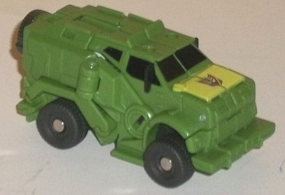
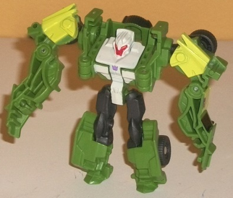
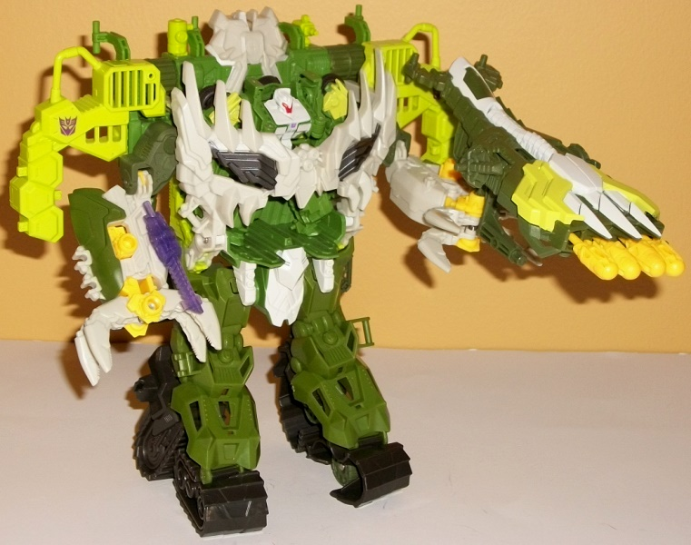
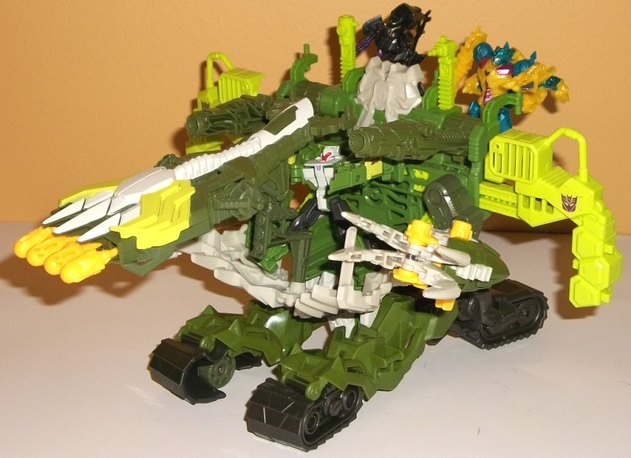

Allegiance: Decepticon
Size
: Cyberverse Vehicle Set
Difficulty of Transformation to Robot
:
Very Easy
Difficulty of Transformation of Vehicle
:
Very Easy
Color Scheme:
Military green, charcoal
black, milky off-white, moderarely dark dull military green, and some light
military green, dark red, black, dark metallic gunmetal gray, prangish
yellow, and metallic bronze
Figure Rating
: 7.2
Vehicle-Armor Rating
: 8.3
(NOTE: Because this set is composed of repaints, this is not a full-blown review. This mainly covers any changes made to the set and the color scheme, and merely compares it to the original versions of these molds. For a review on the original Prime legion Breakdown toy, go here . For a review on the Bumblebee Battle Suit-- what was used as the base mold for the Apex Armor-- go here .)


How is Breakdown still
around for the Beast Hunters line? Well, whatever-- he's got a toy redeco,
regardless. This version of Breakdown has a more "jungle-y" color scheme,
with green being by far his most common color for the main figure. The
vast majority of his plastic is of a medium-shaded military green, which
is fairly appropriate on a buff dude with an alt mode like his. Given that
this mold was also done up as
Outback
, logically
it means that this green-colored version is meant to be a light homage
to G1 Outback's mold-mate Brawn, and other than the Decepticon symbols
and robot head, it works pretty well as that. There's a fair amount of
black plastic as well, used for his wheels and upper robot legs-- though
it's of the charcoal-y, impure kind, which doesn't look as good as the
more "pure" black paint on Breakdown's windows, though it still gives the
toy a nice dark color for the other colors to play off. There's also some
light green on his robot mode shoulders and the front section of his vehicle
mode, which goes excellently with his more "normal" green, both complementing
it and contrasting against it at the same time, adding to the whole "forest/jungle"
theme of the scheme. Finally, there's a bit of bone/off-white on Breakdown's
main body in robot mode, giving another pale color for the green to play
off of, and it looks great, adding just that much more color to Breakdown's
palette to make him more eye-catching (though a bit of paint on his robot
legs wouldn't have hurt). He retains the red face and dark gunmetal gray-colored
spare tire on his back from the initial release of this character.
No mold changes have
been made to this version of Breakdown.


The Apex Armor suit,
on the other hand, is a massive remold of Bumblebee's Battle Suit, with
many of the remolds giving the suit a much more evil-looking, spiky "Beast
Hunters" look to it. The chestplate of the mech is particularly eye-catching,
looking like it's made out of teeth with all the bone-white spikes. Given
Breakdown's flatter, squarer form, he also fits a little better into the
chest cavity of this Apex Armor than Bumblebee did in his Battle Suit.
Another big change is that the transparent blue light-gun from the Battle
Suit has been completely replaced, this time with an impressively large
launcher with some cool claw-like details near the front. Coolest of all,
rotating the dark green wheel near the middle of the gun causes not just
one, but FOUR different missiles to fire from the large barrel of this
weapon, one after the other. Talk about firepower! The lower arms have
also been re-done for this suit, with the more normal hands of the Battle
Suit being replaced with four-pronged claws, which have a default state
of being open but can (mostly) close up by sliding back the yellow slider
in the middle of the lower arms. This slider is spring-loaded, though,
so if you let go of the slider the claws will spring back open. The Apex
Armor holds weapons in the circular port in the middle of the claws, however,
so whether they're open or closed, they'll still hold weapons just fine.
The other remolding done to this toy is more for aesthetics than anything
else, merely making the suit look more like it belongs in the Beast Hunters
line without changing the function of anything. The over-the-shoulder dual
guns and the targeting reticle on the upper back are (besides the aforementioned
chestplate) these remolded pieces, and are a bit more detailed and spiky
than on the Bumblebee Battle Suit, and overall I like the mold changes,
certainly. My only complaint here is that the targeting reticle on the
upper back is a bone white-- given that it's a reticle, shouldn't it be
a transparent color so that someone can actually, y'know, see through it?
The colors of the Apex
Armor are roughly the same as Breakdown's, keeping in with the whole "Jungle"
theme of different shades of green. Another, duller/darker shade of military
green has been added as well to the scheme to give this larger toy a bit
more color variety, and it looks good, particularly next to the bone white
coloration that's more prevalent on the Armor than on Breakdown himself.
Paint apps of bone white and light green also adorn the toy all around,
so-- with the exception of the legs-- the Apex Armor has enough paint apps
to look pretty eye-catching and varied. The only color I activately dislike
on the Apex Armor is the "cheese" yellow, which thankfully is only used
on the claw-slider pieces and the missiles. It just doesn't fit with the
Jungle-y color scheme at all.
Breakdown's Apex Armor
is really nice-looking all around in its mech suit, with great colors,
awesome detailing that looks like it's partially made out of bones, and
a fantastic, fun weapon (a four-barreled missile launcher, c'mon!). Unfortunately
the Apex Armor's "vehicle" mode is still pretty poor like that of the Bumblebee
Battle Suit's, but you can only change a mold so much, I suppose. Breakdown
isn't one of the best legion figures, but he's certainly not the worst
either, and generally if you're looking for a nice playset to beef up your
Beast Hunters Cyberverse figures, you can't really go wrong with this set--
it's my personal favorite out of all the Beast Hunters Cyberverse vehicle
sets.
Review by Beastbot